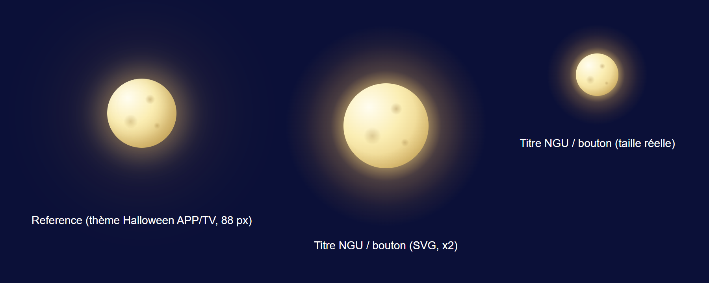
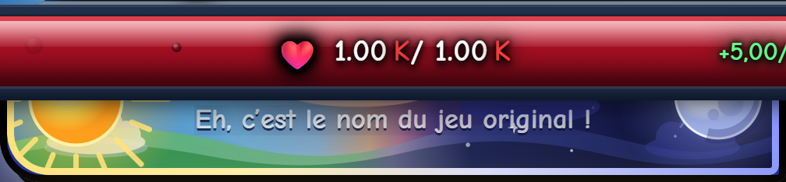
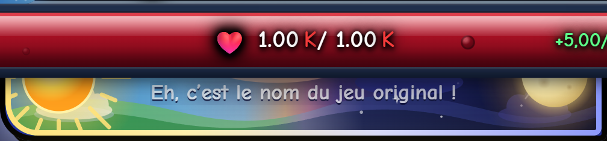
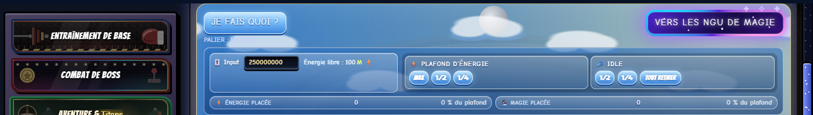
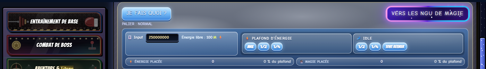
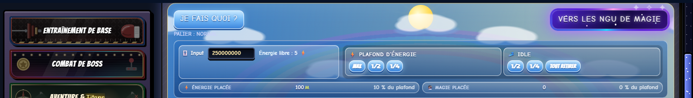
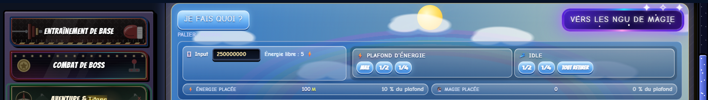
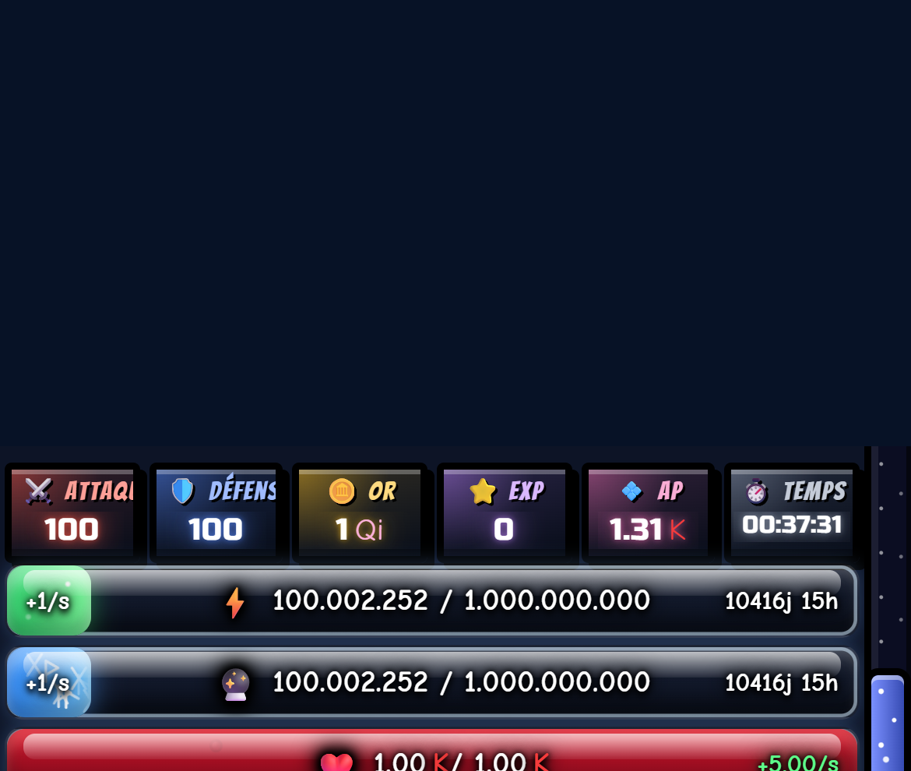
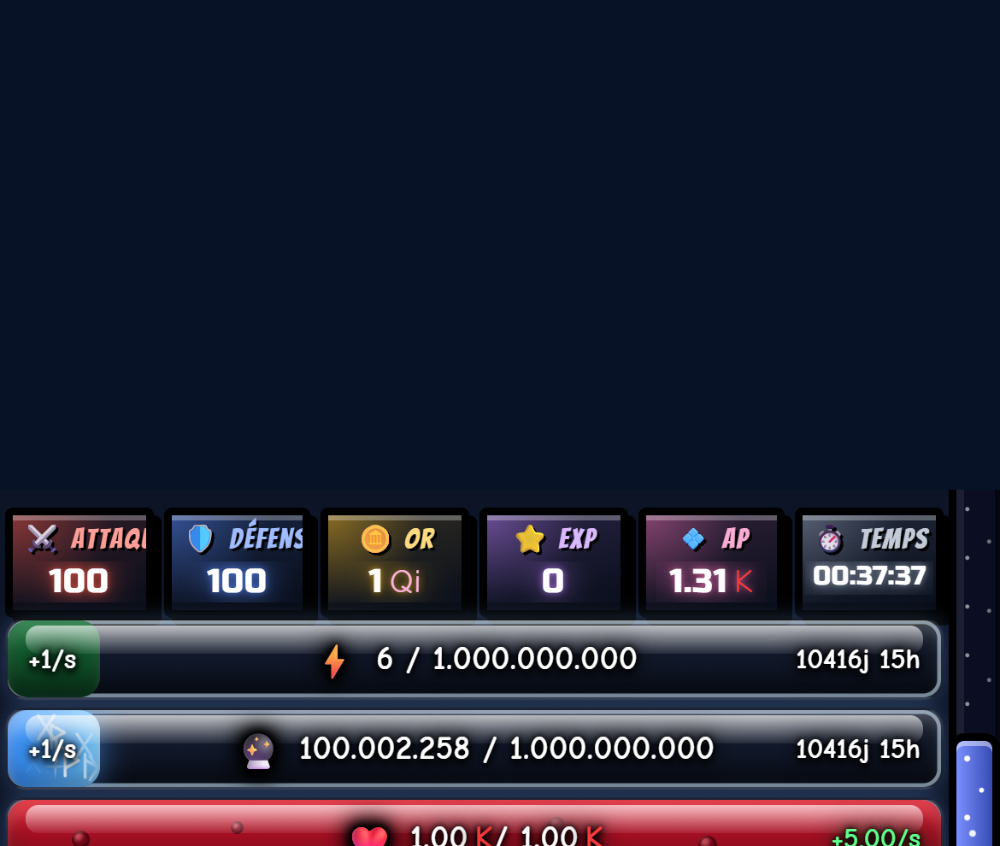

Lune réaliste et ciel du NGU, avant / après (PC 1400 px, puis téléphone 390 px)
Référence : lune du thème Halloween (gauche) et dessin repris pour le titre NGU (milieu, droite)

Cadre de titre : AVANT / APRÈS (PC)
Cadre de titre : AVANT / APRÈS (téléphone)

Avant
AprèsOnglet Magie (nuit), niveau de lumière 1 : AVANT / APRÈS (PC)
Onglet Magie, niveau 0 (lune grise) : AVANT / APRÈS (PC)
Onglet Magie : téléphone, AVANT / APRÈS
Onglet Énergie, niveau 0 : AVANT (soleil gris) / APRÈS (gros nuage gris, ni soleil ni nuages blancs) (PC)


Onglet Énergie, niveau 1 : AVANT / APRÈS (PC)


Transition gris vers ciel clair (APRÈS, PC) : ~0,15 s, ~0,6 s, ~1,2 s
Téléphone, Énergie niveau 0 / niveau 1 (APRÈS)

